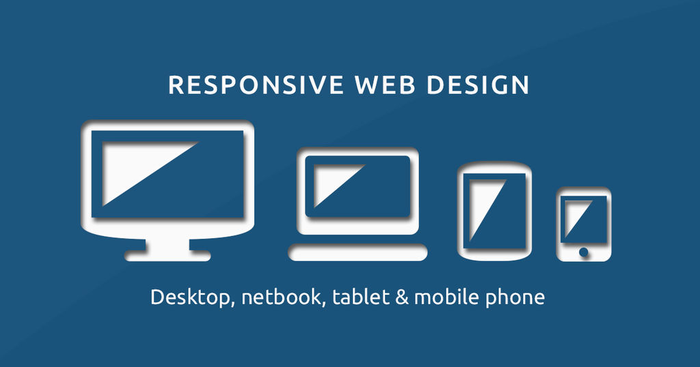

Mikrodata er attributter som brukes til å legge til maskinlesbare data i HTML-dokumenter for å hjelpe søkemotorer og webcrawlere å forstå hva vi skriver om, slik at de kan gi mer relevante resultater til brukerne.
Sosiale Medier
05.11.2020
Sosiale medier er en dominerende trafikkilde for mange nettsider, derfor er det viktig å være ekstra nøye med hvordan nettstedet ditt vises når noen deler et innlegg på facebook eller tweeter.
Tilgjengelighet
05.11.2020
SEO, som er en forkortelse for Search Engine Optimization (Søkemotoroptimalisering på norsk), er prosessen med konfigurering og forbedringer vi gjør på nettstedet for å oppfylle kravene til forskjellige søkemotorer som Google (den mest brukte søkemotoren), med sikte på at nettstedet skal vises på den første søkeresultatsiden, og dermed øke antall besøk på nettstedet.
Alt du trenger å vite om SEO
04.11.2020
SEO, som er en forkortelse for Search Engine Optimization (Søkemotoroptimalisering på norsk), er prosessen med konfigurering og forbedringer vi gjør på nettstedet for å oppfylle kravene til forskjellige søkemotorer som Google (den mest brukte søkemotoren), med sikte på at nettstedet skal vises på den første søkeresultatsiden, og dermed øke antall besøk på nettstedet.
Sass
27.10.2020
Sass (Syntactically Awesome Style Sheets) er en kraftig utvidelse av CSS, som legger til ekstra funksjoner som variabler, løkker og mer, til vanlig CSS. Sass bidrar til å gjøre kodingsprosessen mer effektiv, organisert og raskere sammenlignet med tradisjonell CSS.
Responsivt Design
27.10.2020

Det er en fleksibel design som kan endre form og dimensjoner ved å endre skjermstørrelsen på enheten som nettstedet vises gjennom. Hvis det er en bærbar datamaskin, smarttelefon eller nettbrett, endrer nettstedet automatisk grensesnittet i henhold til de nye størrelsene på skjermen eller i henhold til størrelsen på nettleseren.
Video & Audio
26.10.2020
I tidligere versjoner av HTML hadde vi ikke muligheten til å legge til video og lyd naturlig i koden, så et tredjeparts plugin, som Flash (Silverlight), ble brukt til å legge til lyd og video til nettsteder på nettet.
HTML-skjemaer
11.10.2020
HTML-skjemaer brukes til å samle inn informasjon fra besøkende på nettstedet, som sendes tilbake til serveren. For eksempel kan du samle inn informasjon som navn, e-postadresse og telefonnummer når en bruker oppretter en konto.
Media Typer
11.10.2020
@media kan brukes på et stilark for å spesifisere hvordan en webside skal presenteres basert på typen enheter som brukes, for eksempel dataskjerm eller mobiltelefon.
CSS Layouts
11.10.2020
Gjennom Flexbox-funksjonen kan du spesifisere en container gjennom displayet: flex-egenskap, så kan du fleksibelt manipulere alle elementene i denne beholderen, for eksempel å bestemme formen på utseendet til elementene (vannrett eller loddrett), bestemme størrelsen på hvert element, endre posisjonen til elementene Enkelt.